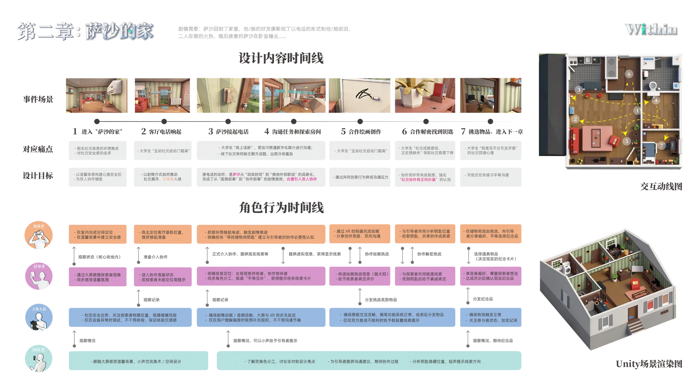

事件场景
从进入室内、电话沟通到轻量协作任务，章节逐步把用户带入可停留的关系启动空间，让共同完成一件小事成为靠近彼此的自然入口。

第二章把叙事重点从外部压迫转向室内安全感。角色终于进入一个可以停留、可以缓慢试探的家庭空间， 电话沟通与轻协作任务在暖色氛围中逐步展开，让交流不再以正面表达为起点，而是以更低门槛的共同动作自然破冰。
这一章的关键不是立刻要求亲密沟通，而是先建立一种“可以一起做点什么”的关系感， 让第一次配合发生在被接纳、被照亮、也更容易开口的室内环境里。

从进入室内、电话沟通到轻量协作任务，章节逐步把用户带入可停留的关系启动空间，让共同完成一件小事成为靠近彼此的自然入口。
即便进入更安全的环境，用户仍可能不敢主动表达，也缺少自然开场的契机，因此需要一种不用先“会说”，也能开始互动的过渡方式。
用温暖的家庭空间与低压力任务，让第一次配合发生得更自然、更容易被接受，并在不强迫表达的前提下慢慢建立协作关系。